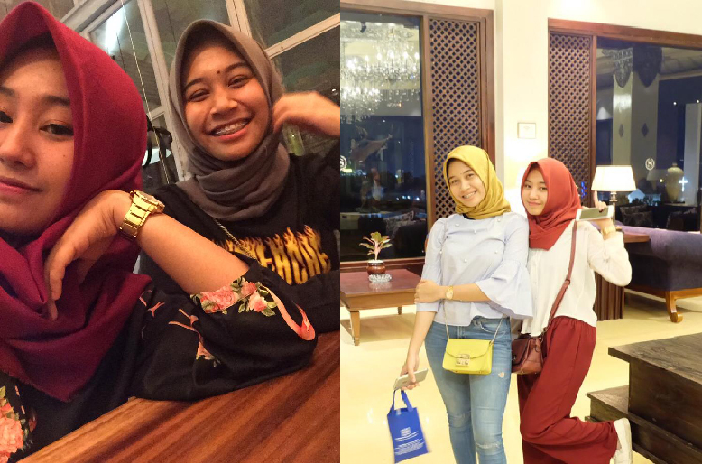
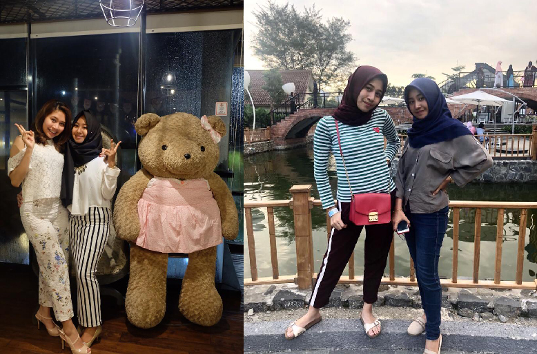
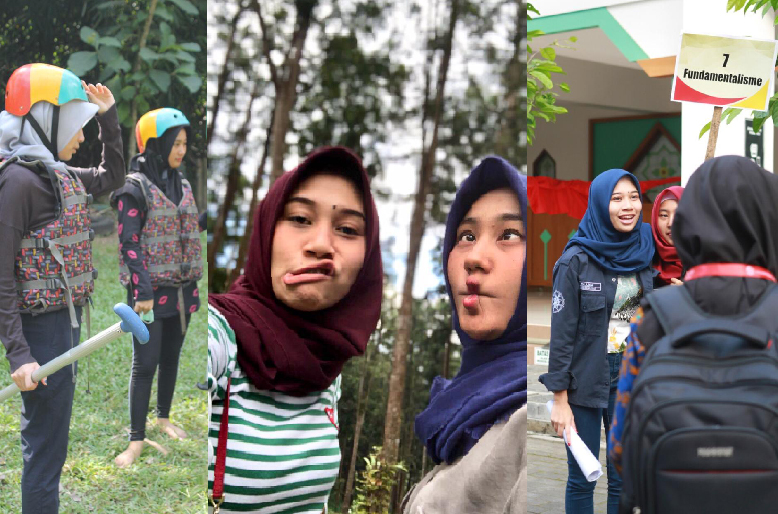
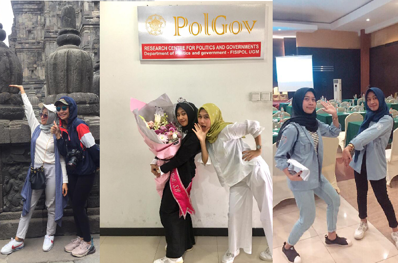
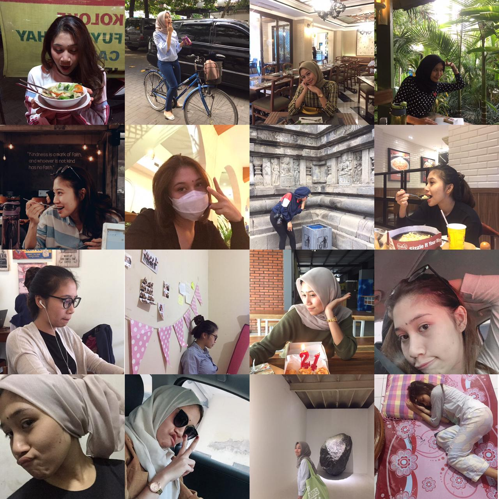
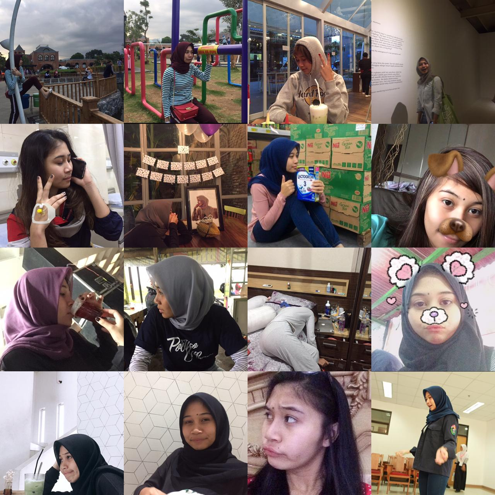
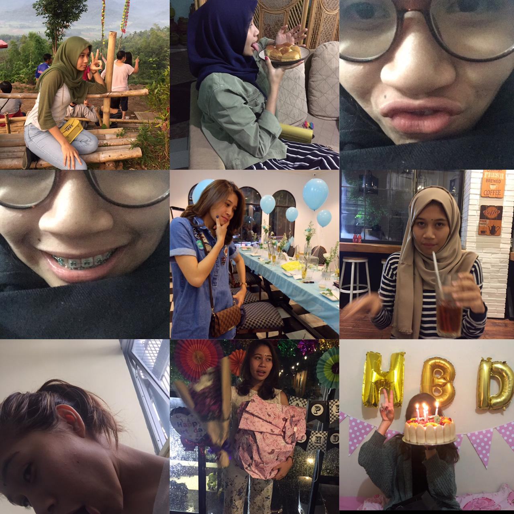

Assalamualaikum zia✨ Halo ZEE!!! Lama banget ga ketemu & ga bertegur sapa yaaa🥺 ahahaha dulu tiap hari bener2 bareng , sekarang kerasa bgt susah pgn ketemu! .
Zi, aku bakal trs inget saat dimana kita pertama kali ketemu & ngobrol bareng. Di gelanggang pas ambil almet! Trs km ngajakin aku bareng kamuu kan buat ke Gor Klebengan, tp kebetulan aku bawa motor saat itu😆
Terus makin kesini, makin deket aja ya kita🥰 Padahal aku sempet minder, aku yang dr orang biasa biasa aja, pernah mikir “bisa ga ya.. aku temenan sama orang yg jauh diatasku?” && JUJUR, kamu adalah salah satu “orang punya” yg bikin aku sadar & merasa pantes buat temenan sm siapa aja🥳.
Aku seneng banget zia, bisa kenal & bahkan ga nyangka bisa sedeket ini sama kamu. Bisa tiap hr bareng dikampus & sering pergi bareng diluar kampus. Aku bersyukur Allah menghadiahkan aku teman yang benar benar baik & tulus💛 bahkan sudah spt sodaraku sendiri. Lebay tapi jujur 😭😂.
Kamu baik banget zi, kamu beda sama orang orang. Aku selalu liat kamu sbg perempuan yang ngga biasa, dr berbagai sisi. Kamu tulus, menyenangkan, royal, mandiri, independen, cerdas & yg aku paling salut adalah km selalu ingin keluar dari zona nyaman. Selalu mau coba hal baru & kenal orang baru. WoW!🤪.
Dengan segala hal yg sudah kamu lalui & dgn segala kebaikan yang sudah kamu tanam, aku selalu yakin kamu akan jadi orang hebat zi. Iyaa!! Zia Perempuan kuat & bisa berdiri diatas kaki sendiri🤗.
Kamu selalu bisa melalui hal sulit dengan baik, jadi tetep semangat yaa zii, kamu pasti bs melalui apapun yang sedang kamu usahakan sekarang. Akan ada saat nya, kok!✨ Makasih ya zia, udh mau mengenal aku & keluargaku dgn tulus. Percaya ngga?! keluargaku jg selalu bersyukur akan hal ini, bs kenal kamu & keluargamu ☺️ .

Sampai kapanpun rumah bapak fauzan & ibu umi yg kecyil ini akan selalu terbuka lebar untuk anak ke-4 nya😂 Kamu selalu dinanti2 kan zi sama keluargaku, lho. Kalau ada kesempatan, main ke rumahku lg yah zi!🤗.
Zia, masa S1 kita ternyata sudah selesai & sudah berlalu cukup lama ya, zi. Saatnya kita melanjutkan hidup & mimpi masing- masing.. 😢
Selamat untuk gelar S.I.P mu, selamat untuk sudah bertahan tepat 23th di 31 Jan 2021 ini🥳
Insya Allah gapernah terlewat doa untuk zia & keluarga, smg selalu dlm lindungan Allah.. & selalu dilimpahkan kebahagiaan dlm hidupnya💛
  makasih zi, udh nemenin jatuh bangunku di masa perkuliahan! Kangen zia! ☹️.
Jadi, kamu ke Cilacap atau aku ke Pekalongan dulu nih?😋